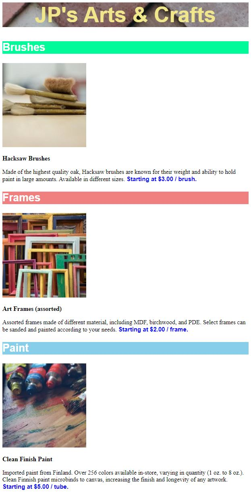
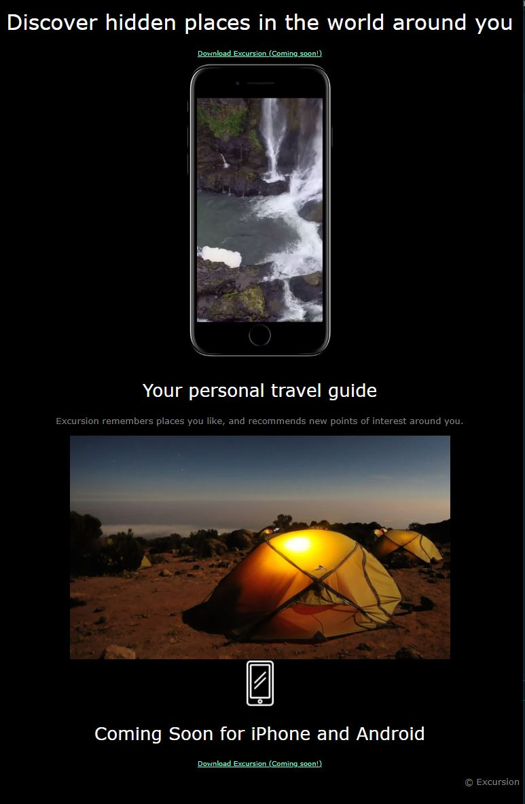
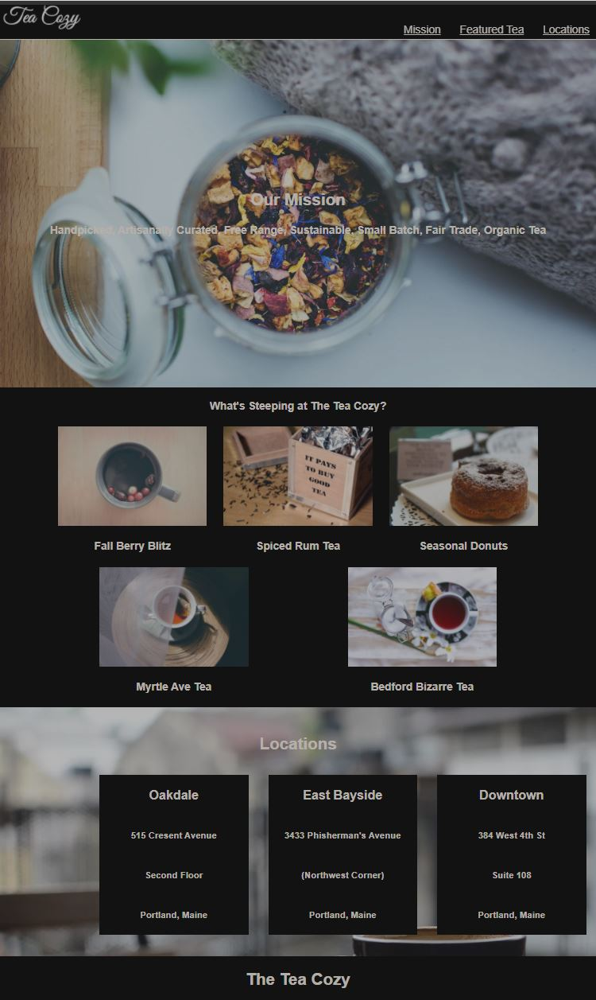

About Me
Hi! I'm June Sung Park, Chairman of Korea Software Technology Association (KOSTA). My software engineering career started in 1984 at a computing center in the Ohio State University where I obtained my Ph.D. degree in Computer Science. I programmed in Fortran, SAS, PL/1, Cobol, etc. using mainframe computers during 1980s. I didn't do much programmig during the last 30 years. During that period I served as a professor at the University of Iowa and then as CTO in Samsung, and then as a professor in Korea Advanced Institute of Science Technology (KAIST). From 2019, serving as Chairman of KOSTA after retiring from KAIST, I started programming again. I develop web applications that we can use as capstone projects in KOSTA software training programs. I use HTML, CSS, JavaScript, Java, mySQL, front-end and back-end libraries and frameworks in developing those applications.
Projects
Arts & Crafts

Excursion

Tea Cozy

Skills
Contact
Have an interesting project? I would love to hear about it!